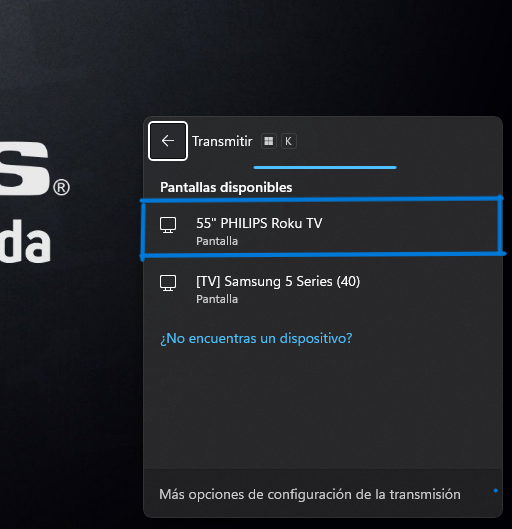
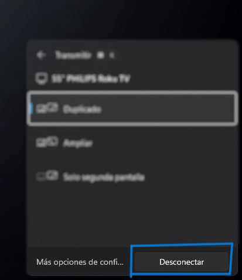

1. Encender la TV
2. Presiona las teclas Windows + K de tu teclado al mismo tiempo. Se mostrará un menu en la parte inferior derecha.

3. Seleccionar Pantalla 55" PHILIPS Roku TV.
Una vez seleccionada solo queda esperar la conexión con la pantalla.

4. Para detener la transmisión se tendra que volver a presionar las teclas Windows + k y presionar en el boton de Desconectar para finalizar la transmisión.